一、页面（P01–P08）
路由为 hash 形式，直接在地址栏 #/ 后输入即可定位；P01 与 P08 各含两个子状态。
P01a · 首页（空态） — 首次打开应用（无本地记录）
进入方式：#/home（重置演示后即为该画面）｜截图文件：P01a-home-empty.png
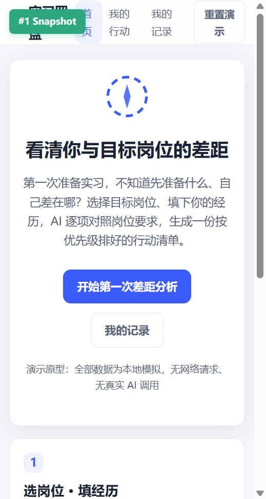
P01b · 首页（回访态） — 已有分析记录与行动时再次打开
进入方式：#/home（存在记录时自动切换）｜截图文件：P01b-home-revisit.png
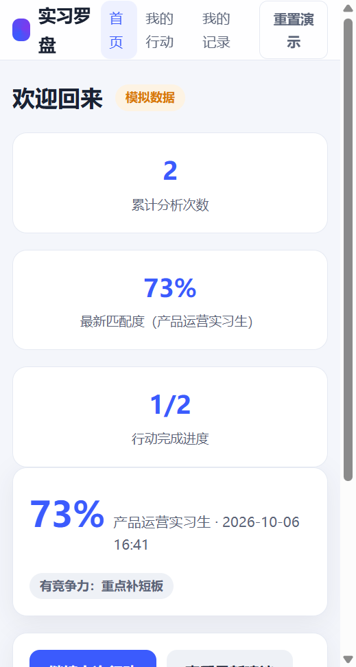
P02 · 信息填写页（空白） — 目标岗位、年级、专业、经历、技能、时间投入的结构化填写
进入方式：首页点「开始第一次差距分析」→ #/form｜截图文件：P02a-form-blank.png
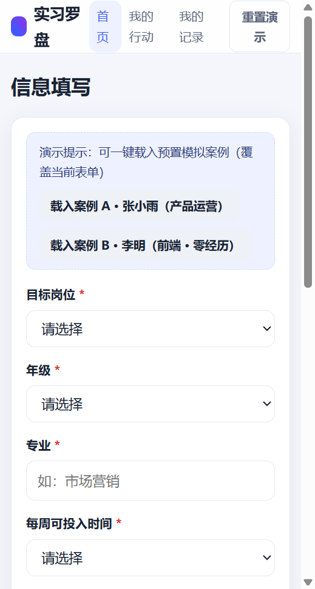
P02 · 信息填写页（已载入预置案例 A） — 表单顶部可一键载入演示案例
进入方式：表单页点「载入案例 A · 张小雨」｜截图文件：P02b-form-preset.png
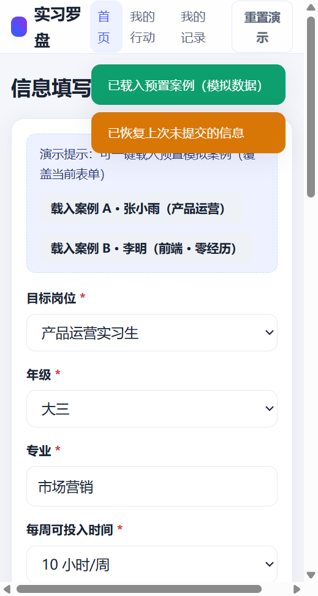
P03 · 分析中页（loading） — 分阶段进度动画（读取信息→对照岗位→生成建议），可取消
进入方式：表单提交后自动进入，模拟延时约 3 秒｜截图文件：P03-analyzing.png
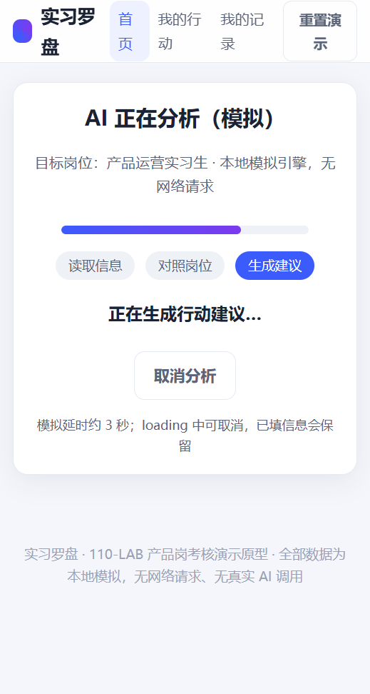
P04 · 结果页（差距分析 + 行动清单） — 匹配度 59%、5 维差距表（含事实/推测依据标签）、5 项行动清单
进入方式：分析成功自动进入 #/result/:id（案例 A 数据）｜截图文件：P04-result.png
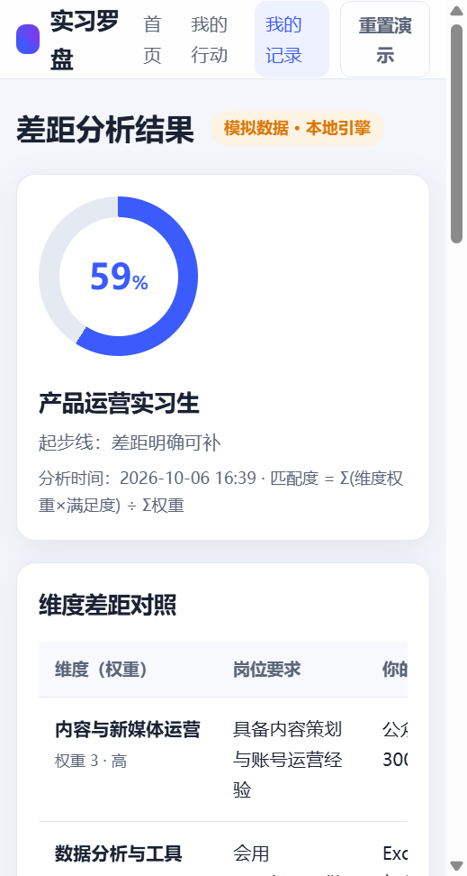
P05 · 修改信息页 — 预填上次信息，修改后重新分析生成新记录（旧记录保留）
进入方式：P04 点「修改信息，重新分析」→ #/form?edit=1｜截图文件：P05-form-edit.png
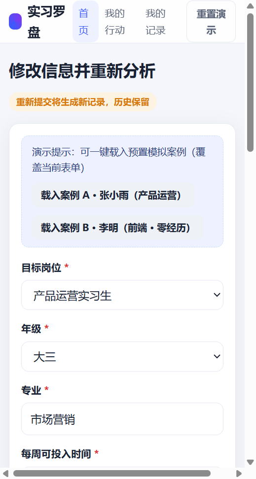
P06 · 历史记录列表 — 倒序展示历次分析（岗位/匹配度/纠正数），可删除
进入方式：顶栏「我的记录」→ #/history｜截图文件：P06-history.png
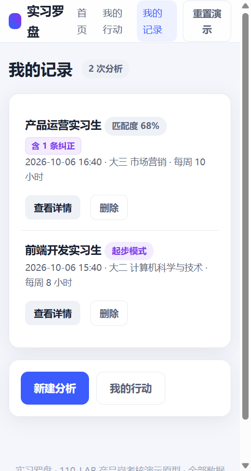
P07 · 历史详情页 — 该次分析完成时的快照（含纠正记录），不随后续修改变化
进入方式：P06 点击某条记录 → #/history/:id｜截图文件：P07-history-detail.png
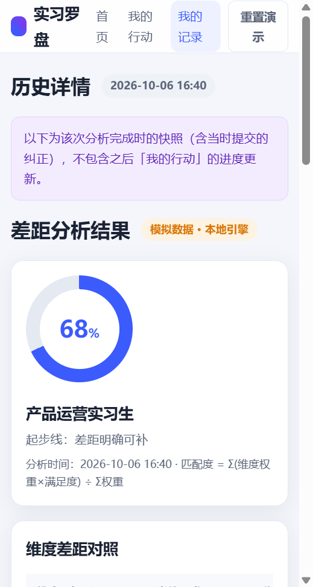
P08a · 行动进度页（空态） — 尚未勾选任何行动
进入方式：顶栏「我的行动」→ #/actions（无行动时）｜截图文件：P08a-actions-empty.png
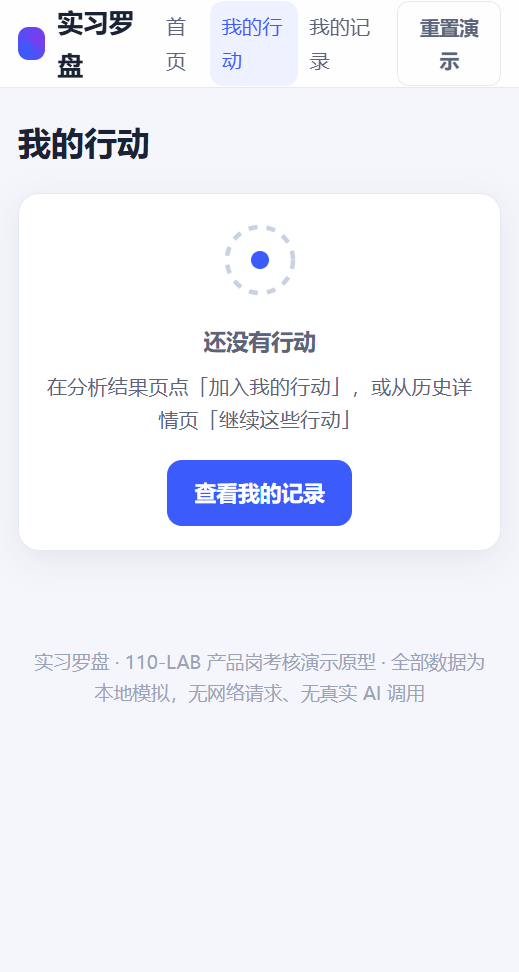
P08b · 行动进度页（有行动） — 标记完成/放弃，完成后差距与建议重算
进入方式：结果页点「加入我的行动」后查看｜截图文件：P08b-actions-list.png
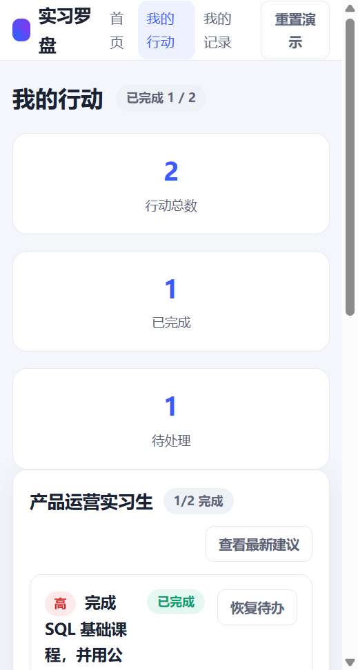
二、弹窗与异常状态（S01–S08）
全部弹窗/异常状态均有对应画面，与 product-doc.md 3.2 清单一一对应。
S01 · 必填信息不足提示 — 列出缺失必填项，行内红字标注，「去补充」自动定位
触发：必填项留空提交｜截图文件：S01-missing-required.png
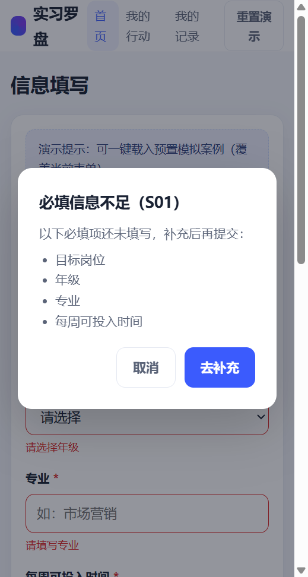
S02 · 经历为空询问弹窗 — 二选一：补充经历 / 进入起步建议
触发：经历区为空时提交｜截图文件：S02-no-experience.png
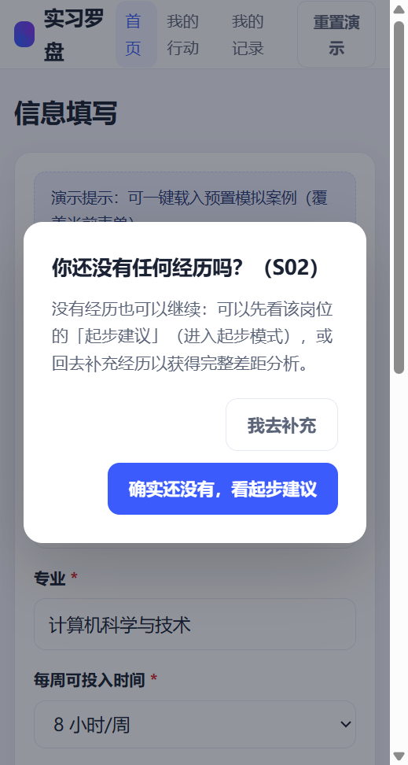
S03 · AI 生成失败重试弹窗 — 模拟失败（本地引擎未返回结果），可重试或返回修改，输入不丢失
触发：勾选「模拟下一次分析失败」后提交｜截图文件：S03-fail-modal.png
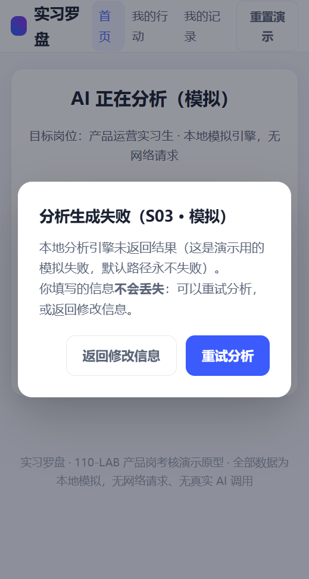
S04 · 纠正 AI 推测弹窗 — 显示被纠正结论，选择原因 + 填写修正说明
触发：结果页 [推测] 条目点「这不准」｜截图文件：S04-correct-modal.png
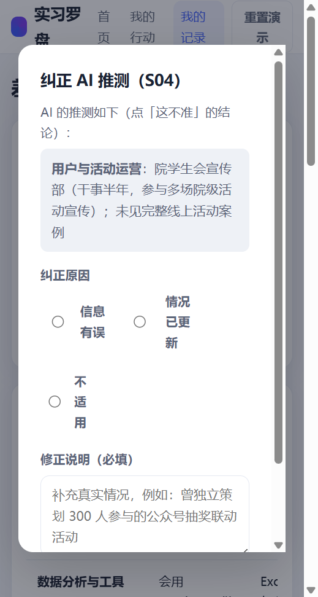
S05 · 建议已更新横幅 + 纠正后结果 — 纠正提交后匹配度 59%→68%，右上角横幅提示 1 条修正
触发：S04 提交纠正后自动出现（横幅约 3.4 秒）｜截图文件：S05-updated-toast.png
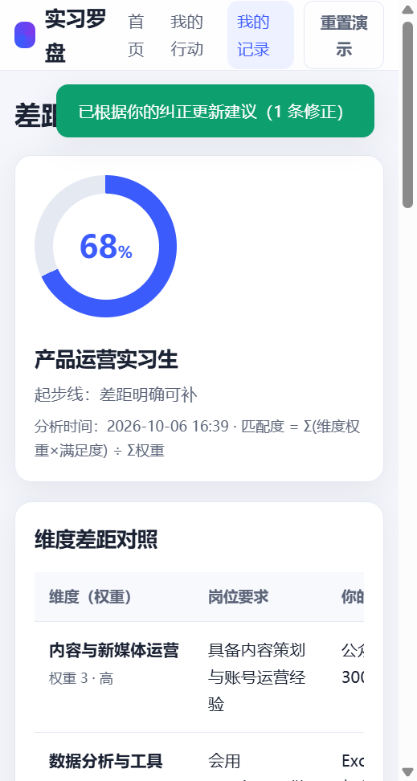
S06 · 删除历史记录确认弹窗
触发：我的记录点「删除」｜截图文件：S06-delete-confirm.png
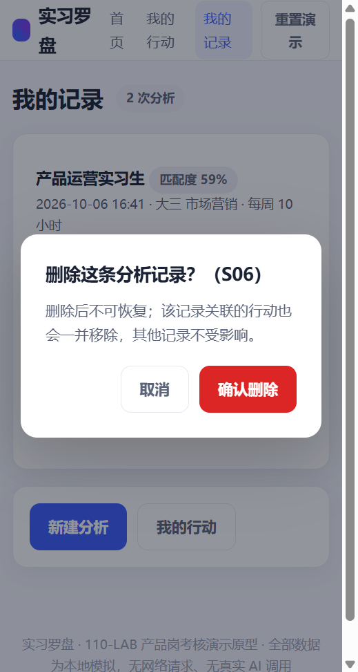
S07 · 清空演示数据确认弹窗 — 确认后恢复首次打开空态
触发：顶栏「重置演示」或 URL 加 ?reset=1｜截图文件：S07-reset-confirm.png
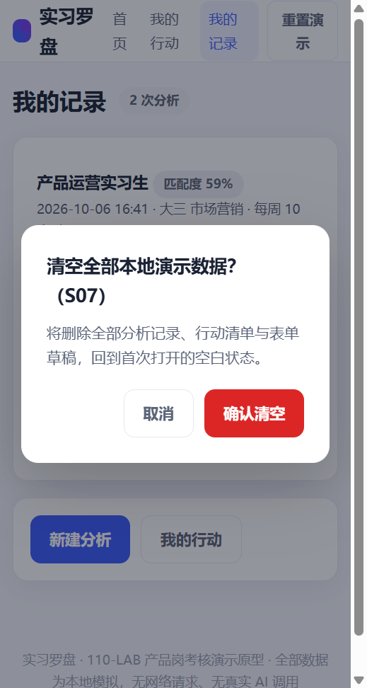
S08 · 起步模式结果页（信息不足降级态） — 无匹配度、起步标签、4 项起步行动包、时间偏紧提示
触发：S02 选「确实还没有，看起步建议」后分析完成｜截图文件：S08-starter-result.png
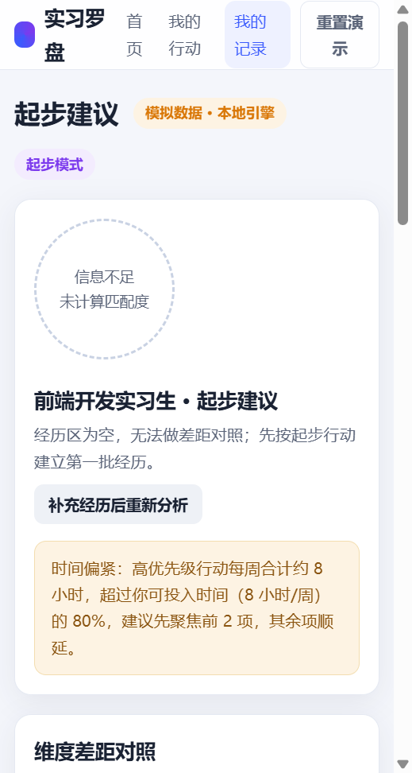